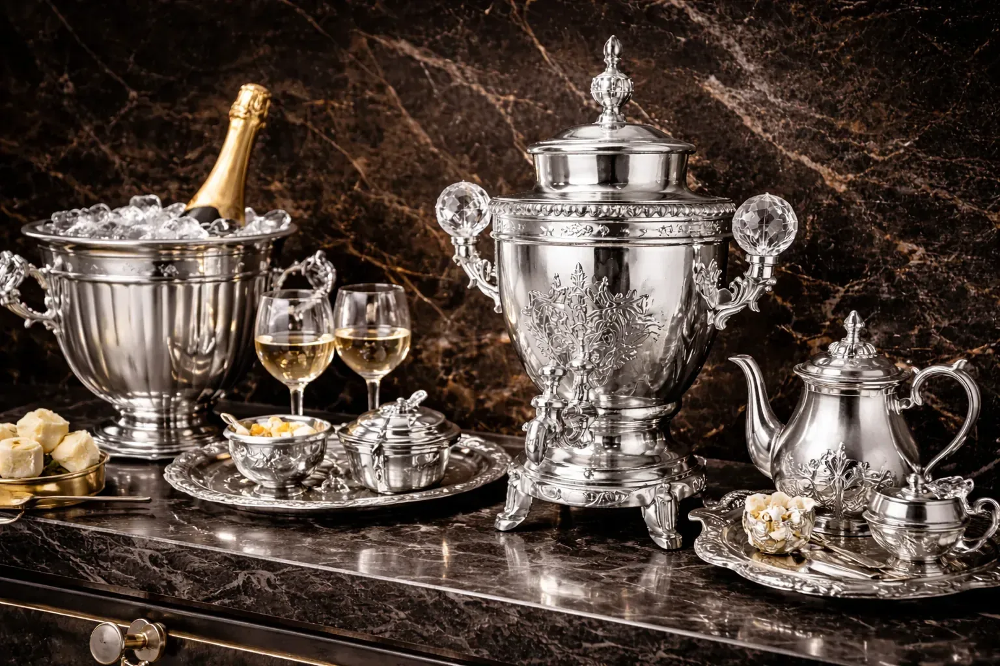
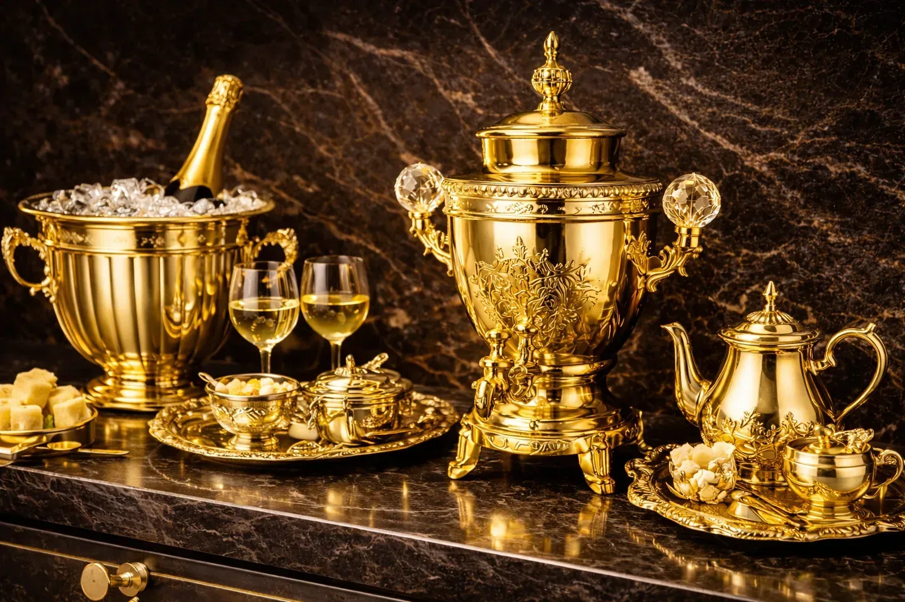
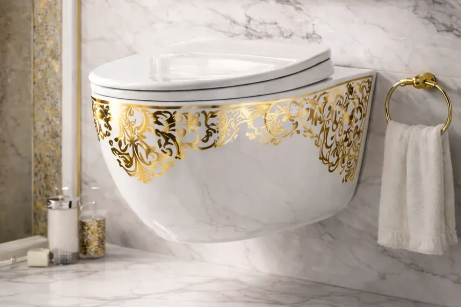
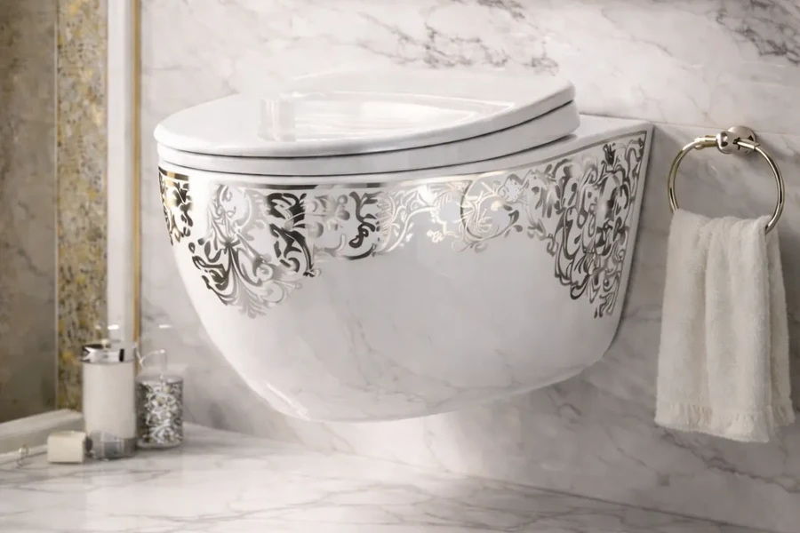

پرداختکاری قطعات برنجی: نکات مهم برای خروجی لوکس
برنج با یک پرداخت خوب واقعاً لوکس میشود. با یک پرداخت بد، همانقدر سریع افت میکند.
از آمادهسازی سطح تا کنترل کیفیت نهایی؛ معیارهایی مثل یکنواختی فینیش، چسبندگی و مقاومت سطحی با توجه به زیرکار و کاربرد پروژه بررسی میشوند.
PVD دکوراتیو و صنعتی، نیکلکروم و پولیش/پرداخت سطح را بر اساس جنس قطعه، وضعیت سطح و هدف پروژه ارزیابی و اجرا میکنیم.


زیرکار، فینیش، معیار پذیرش و مقیاس تولید را کنار هم میگذاریم؛ سپس مسیر اجرا و نیاز به نمونهسازی مشخص میشود.
جنس پایه، پوشش قبلی، خطوخش، رزوه و نواحی حساس.
رنگ، براقیت، بافت و مرجع قابلقبول برای تأیید.
آنچه باید مشاهده، اندازهگیری یا با نمونه مرجع مقایسه شود.
نمونهسازی، بچ آزمایشی یا تیراژ و محدودیت زمانی پروژه.
سه گام ساده برای تبدیل اطلاعات اولیه به تصمیم اجرایی؛ بدون وعده قطعی قبل از دیدن مشخصات واقعی قطعه.
جنس، وضعیت سطح، کاربرد، تیراژ و رنگ/فینیش هدف بررسی میشود.
زیرسازی، نمونهسازی احتمالی و روش پوشش متناسب با قطعه مشخص میشود.
ظاهر، یکنواختی و معیارهای توافقشده پیش از بستهبندی و تحویل بازبینی میشوند.
دو گزینه را انتخاب کن تا تفاوتها مشخص شود. اگر برای انتخاب مردد هستی، از استعلام قیمت و مشاوره شروع کن.
بهترین کاربرد: شیرآلات، یراق دکوراتیو و قطعات نمایشی
حس ظاهری: درخشان و چشمگیر؛ مناسب پروژههایی با مرجع رنگ/فینیش مشخص
بهترین کاربرد: شیرآلات مدرن، فضاهای مینیمال و اکسسوریهای تیره
حس ظاهری: کنتراست بالا با ظاهر مدرن و صنعتی
| ویژگی | گزینه A | گزینه B |
|---|---|---|
| بهترین کاربرد | شیرآلات، یراق دکوراتیو و قطعات نمایشی | شیرآلات مدرن، فضاهای مینیمال و اکسسوریهای تیره |
| حس ظاهری | درخشان و چشمگیر | تیره، مدرن و صنعتی |
| دوام | وابسته به زیرکار، آمادهسازی و شرایط استفاده | وابسته به زیرکار، آمادهسازی و شرایط استفاده |
| نگهداری | شوینده ملایم و دستمال نرم | تمیزکاری ملایم و خشککردن لکه آب |
| زمان تحویل | پس از بررسی قطعه و تیراژ | پس از بررسی قطعه و تیراژ |
خدمات تخصصی پوششدهی و پرداخت سطح
طلایی، رزگلد، دودی، نقرهای مناسب دکور و یراق
فینیش براق نیکلکروم برای شیرآلات، یراق و قطعات تزئینی؛ مسیر زیرسازی به جنس و شرایط کارکرد وابسته است.
آمادهسازی سطح، پولیش و افزایش جلوه نهایی قبل/بعد از پوشش (Polishing)
پوششهای مقاوم برای کاربردهای صنعتی با تمرکز روی چسبندگی و دوام.
رنگهای لوکس و ماندگار برای شیرآلات و یراقآلات با حساسیت ظاهری بالا.
تخصص در مهندسی سطح و لایهنشانی PVD
مجموعه پوششدهی کاویانبا بهرهگیری از۱۵ سال دانش و تجربه در ساخت دستگاههای PVD، از سال۱۳۹۶به صورت تخصصی در زمینه لایهنشانی فیزیکی فعالیت میکند.
ما افتخار همکاری با شرکتهای معتبر از جمله عالینسب، نگین پاسارگاد و لاژید را داشتهایم. در پروژههای حساس، نمونه مرجع و معیار پذیرش قبل از تیراژ مشخص میشود تا ارزیابی خروجی بر پایه معیار توافقشده باشد.
جدیدترین مقالهها و راهنماهای کاربردی برای انتخاب پوشش و نگهداری.
در حال حاضر مقالهای برای نمایش وجود ندارد؛ برای مطالعهٔ مطالب به صفحهٔ مقالات مراجعه کنید.

برنج با یک پرداخت خوب واقعاً لوکس میشود. با یک پرداخت بد، همانقدر سریع افت میکند.

اگر نور محیط سخت است یا تماس زیاد دارید، ساتن معمولاً انتخاب منطقیتری است. اما بعضی پروژهها آینهای میخواهند.

اگر پولیش بد باشد، بهترین پوشش هم معجزه نمیکند. برای فینیش لوکس، زیرکار پادشاه است.

هر دو اسمشان کروم است، اما هدفشان یکی نیست. اگر انتخاب اشتباه کنید، یا هزینه اضافه میدهید یا دوام نمیگیرید.

اگر کروم کدر شد یا آبکاری پوسته داد، قبل از تغییر وانها مسیر تمیزکاری و فعالسازی را چک کنید.

زاماک اگر درست آماده نشود، آبکاری را با پوسته شدن و حفره جواب میدهد. اینجا مسیر کمریسکتر را میخوانید.
منتخبی از پروژههای انجام شده


امکان اجرا به نوع لعاب، هندسه، وضعیت سطح، طرح و کاربرد نهایی وابسته است؛ برای پروژههای سری، نمونهسازی قبل از تعمیم نتیجه توصیه میشود.
برای قطعاتی مثل روشویی و بدنههای لعابدار، ابتدا چسبندگی و سازگاری سطح روی نمونه بررسی میشود.

رنگ و فینیش باید همراه با نوع مصرف، شستوشو و طرح زیرکار بررسی شود؛ عکس بهتنهایی معیار کافی نیست.

مسیر ثابت برای همه محصولات تعریف نمیکنیم؛ ابتدا نمونه و لعاب بررسی میشود، سپس در صورت نیاز طرح/تثبیت و در نهایت پوشش و کنترل خروجی انجام میشود.

برای مشاوره و سفارش با ما در تماس باشید
تهران، منطقه شهریار، اندیشه، بلوار ولایت، نرسیده به ملارد، بلوار راغب، خیابان اطلس شرقی، پلاک ۶۴۹